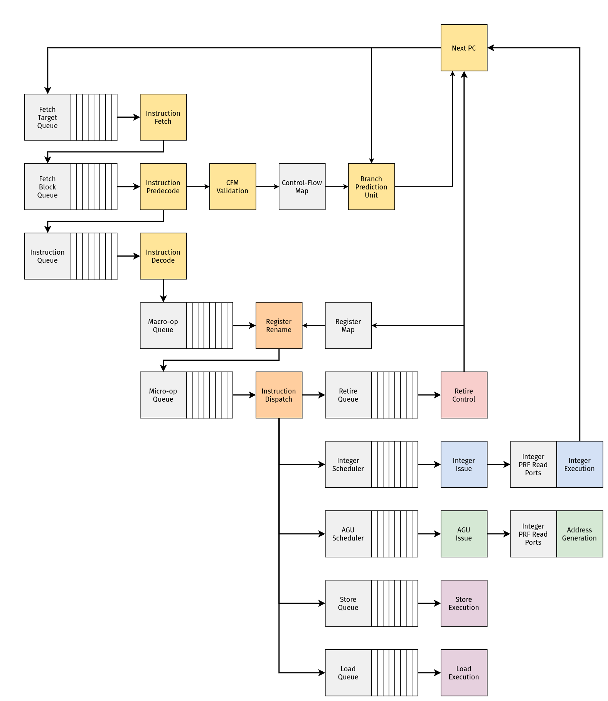

Introduction
As of mid-2023, this design is still mostly conceptual and largely consists of fragments of partially-completed ideas in RTL. There are no synthesizable artifacts, and this will probably be the case for some time.
This project is a vehicle for exploring the following questions:
- How are modern [superscalar, out-of-order] microprocessors implemented?
- How do you create a behavioral description of these machines in RTL?
- What does it take to physically implement these machines?
Currently, ZNO is a RISC-V machine designed around the RV32I base integer
instruction set. This seemed like sufficient ground for exploring many
of the problems involved in the design of modern machines.
Other aspects of the RISC-V ISA can probably be added after the
overall design has stabilized somewhat.
Rough Overview
The ZNO core is split into three pieces:
- The frontend (for dealing with control-flow)
- The midcore (for managing state)
- The backend (for dealing with data-flow)

About Chisel
ZNO is written in Chisel,
an HDL embedded in Scala. Chisel internally represents designs with
FIRRTL, which may be lowered
into other representations (like Verilog) via CIRCT.
Testing/Simulating the Design
Chisel also includes a framework for writing tests (chiseltest).
In the future, it will probably be necessary to explore other ways of
simulating and testing designs.
Specifically, CIRCT's arc dialect provides a representation for simulating
circuits which can be lowered into LLVM IR!
CIRCT provides an experimental tool (arcilator) for this, although FIRRTL
needs to be lowered into the hw dialect for this to work.
At the moment, arcilator can be used to generate simple C++ bindings
(see tools/arcilator` in the CIRCT tree for details on this).
It's easy to imagine that in the future, the FIRRTL dialect will be able to
represent user-defined types (Chisel bundles). Presumably at some point,
this information can be lowered into hw and used by arc (or other
tooling) for creating a nice ergonomic interface to the simulated state.